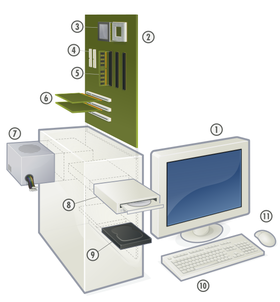

Tienda de las computadoras
Computadoras LInux es un emprendimiento 100% Guatemalteco el cual inicia en el 2008. Gracias a Dios es una de las empresas líder en el mercado de las computadoras, dedicada actualmente a la importación y distribución de computadoras originales nuevas y seminuevas.
La empresa ofrece un amplio y variado Stock en Computadoras de escritorio y portátiles, de las mejores marcas a nivel mundial, servimos al cliente final, como también a colegios, institutos, fundaciones, call center, academias y personas emprendedoras que desean iniciar un negocio tal como una sala de Internet o un centro de capacitación.
Confiamos completamente en la calidad y rendimiento que puede brindar cada uno de nuestros equipos, por lo que son 100% garantizados.
Buscamos servir siempre con excelencia, siendo nuestro mayor compromiso la satisfacción de nuestros clientes.
